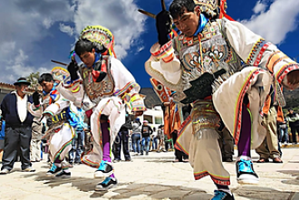
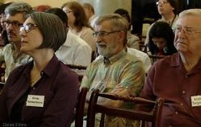
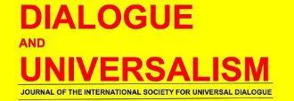

Latest Stories

PHILOSOPHY IN AN AGE OF CRISIS: CHALLENGES AND PROSPECTS
Lima, Peru July 10-15, 2018
The goal of this World Congress is to promote dialogue concerning various crucial philosophical issues in today’s world and to explore the role of philosophy in our complicated times.

Values and Ideals: Theory and Praxis
July 11-15, 2016 Warsaw, Poland
The 2016 XI ISUD World Congress was conducted as a celebration of the Society’s founding twenty-eight years ago in Warsaw.

Dialogue and Universalism
Vol.XXVI No. 4/2017
Dialogue and Universalism is the peer reviewed academic journal of the International Society for Universal Dialogue (ISUD).